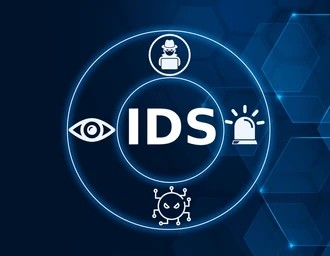

 |
An intrusion detection system (IDS) is a device or software application that monitors a network or system for malicious activity or policy violations and alerts administrators. It functions by analyzing traffic for known threats (signature-based) or by identifying deviations from normal behavior (anomaly-based). IDSs can be implemented as software or hardware, with network-based (NIDS) and host-based (HIDS) being the two main types |
| Intrusion Detection System (IDS) observes network traffic for malicious transactions and sends immediate alerts when it is observed. It is software that checks a network or system for malicious activities or policy violations. Each illegal activity or violation is often recorded either centrally using an SIEM system or notified to an administration. |
Detect network intrusions in real-time using Machine Learning and KNN algorithm.
Enter feature values manually and check if the connection is normal or intrusive.
Go to PredictionUpload a CSV dataset and get a full analysis of normal and intrusive activities.
Upload File